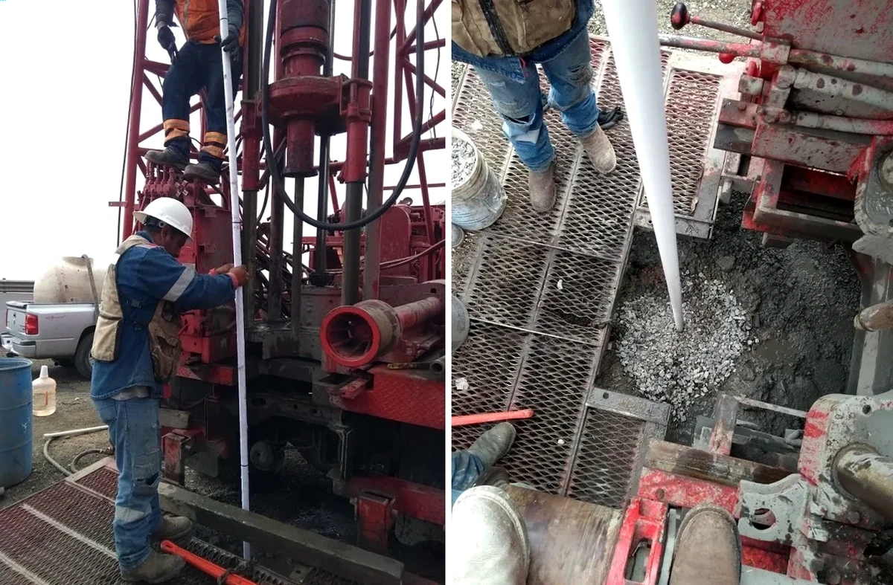

Our firm provides comprehensive geotechnical services in Rockhampton, tailored to the unique conditions of Central Queensland. We deliver integrated site characterization, foundation design, subsurface investigation, and construction monitoring for residential, commercial, and infrastructure projects. With a focus on local relevance, we ensure code-compliant reports and practical solutions for every project. Whether you need geotechnical analysis for soft soil or guidance on foundations on fill, our team combines regional expertise with rigorous standards to support safe and cost-effective development.

Scope of work
Area-specific notes
Our team brings consolidated regional experience across Central Queensland, including Rockhampton, Yeppoon, and the Bowen Basin. We operate a calibrated laboratory for soil classification, strength, and compaction testing, ensuring data reliability. We maintain close coordination with local contractors, council engineers, and certifiers to streamline approvals. Our geotechnical reports are code-compliant with AS 1726 and AS 2870, and we routinely use advanced techniques like electrical resistivity VES for subsurface imaging. This local expertise allows us to anticipate site-specific challenges—such as reactive clays or shallow groundwater—and deliver practical, cost-effective recommendations.
Watch how it works
Standards used
All geotechnical work in Rockhampton follows Australian Standards (AS) and associated codes. Key standards include AS 1170.4-2007 for earthquake actions, AS 1726-2017 for geotechnical site investigations, and AS 2870-2011 for residential slabs and footings. For deep foundations, we reference AS 2159-2009 for piling design and installation. Laboratory testing adheres to AS 1289 series (e.g., AS 1289.6.2.1 for soil compaction). We also incorporate AS 1289.6.3.1 for Standard Penetration Test procedures and AS 1289.6.2.1 for field vane shear, ensuring international compatibility. Our reports are fully compliant with these codes, providing clarity for local councils and certifiers.
FAQ
What are the typical soil conditions for building foundations in Rockhampton?
Rockhampton soils often consist of stiff to hard clays overlying sands and gravels, with bedrock at depths of 10–30 meters. The clays can be highly reactive (expansive), requiring careful foundation design to avoid movement. Shallow groundwater (2–5 m deep) may affect excavations and require dewatering. Our site investigations characterize these conditions per AS 2870 to recommend appropriate slab or footing types.
How does the Fitzroy River floodplain affect geotechnical work in Rockhampton?
The floodplain creates shallow groundwater, often within 2–3 meters of the surface, and loose alluvial sands that may be prone to liquefaction during seismic events. Flooding can also saturate reactive clays, increasing shrink-swell potential. Our investigations include groundwater monitoring and assessment of liquefaction risk per AS 1170.4 to ensure safe foundation design.
What Australian standards must geotechnical reports comply with in Rockhampton?
Reports must follow AS 1726-2017 for site investigations, AS 2870-2011 for residential slabs, and AS 2159-2009 for deep foundations. For earthquake loads, AS 1170.4-2007 applies. Laboratory testing follows the AS 1289 series. Compliance with these codes is required by local councils and certifiers for building approvals.
Do you provide geotechnical services for infrastructure projects in the Rockhampton region?
Yes, we support a range of infrastructure projects including roadworks, bridges, and drainage in Rockhampton and surrounding areas. Our services include borehole drilling, soil testing, and foundation recommendations for embankments, retaining walls, and pavements. We also conduct compaction testing and monitoring to ensure compliance with project specifications.